Module 5 — Alarms and Events Visualization | Pages 321–340
steps, you will reposition the graphics on the canvas and enable a fixed canvas size. 28. On a blank area of the canvas, right-click and select Select All. 29. Move the selected elements to the left side of the canvas.
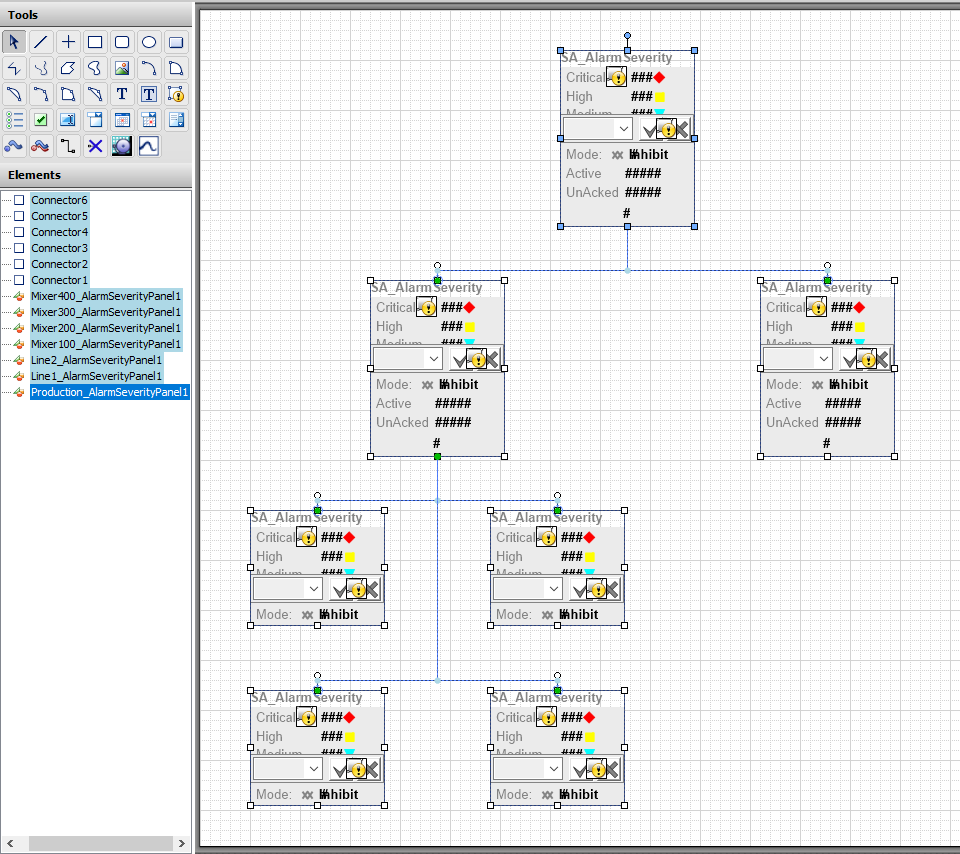
AVEVA InTouch WindowMaker canvas showing the completed Alarm Aggregation hierarchy with SA_AlarmSeverity panels connected by connector lines. The Elements panel lists Production_AlarmSeverityPanel1, Line1/Line2_AlarmSeverityPanel1, Mixer100-400_AlarmSeverityPanel1, and Connector1-6. The top-level Production panel shows Critical/High/Medium severity indicators with placeholder counts, Mode: Inhibit, Active and UnAcked fields, and control buttons.
30. Click the canvas to deselect all elements and show canvas properties. 31. On the Properties tab, set Size to Fixed. The canvas displays selection handles for resizing. 32. Resize the canvas to fit the graphics, ensuring white space on all sides as shown below: 33. Save and close and check in the graphic.
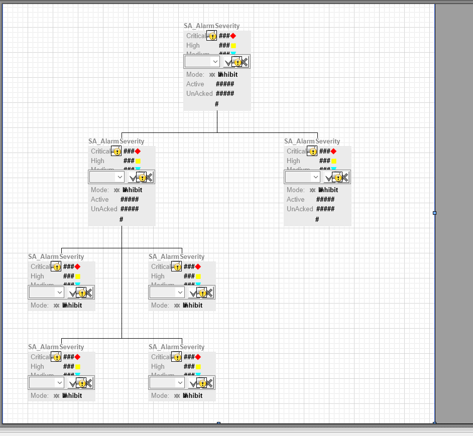
AVEVA InTouch WindowMaker canvas showing the alarm aggregation layout resized to fit, with a 4-tier hierarchical tree of SA_AlarmSeverity widgets. The canvas has been set to Fixed size and resized to show all panels with white space on all sides. Each widget displays severity indicators (Critical red diamond, High yellow square, Medium cyan triangle), control buttons, Mode: Inhibit, Active/UnAcked placeholder fields.
Now, you will duplicate a navigation button and modify it to display the AlarmAggregationOverview graphic in a popup window. 34. On the Graphics tab, duplicate NavigationButton, name the duplicate as NavigationButton2, and then open it for editing. 35. Right-click the canvas and select Custom Properties. 36. Change the WindowModal and WindowResizable custom properties to True. 37. Click OK to close Edit Custom Properties. 38. Double-click the button to open Edit Animations. 39. In Animations, endure Element Style is selected, and then click Remove Animation.
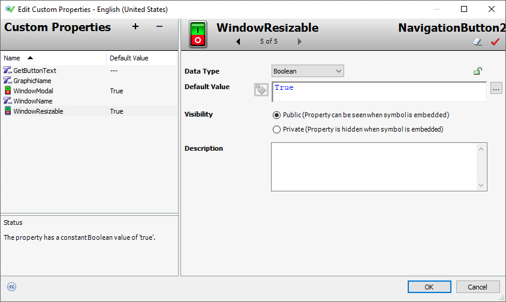
Edit Custom Properties dialog for NavigationButton2 symbol, showing the Custom Properties list with GetButtonText, GraphicName, WindowModal (set to True), WindowName, and WindowResizable (selected, set to True). The status area confirms WindowResizable is a constant Boolean value of 'true'. The right panel shows WindowResizable editing with Data Type: Boolean, Default Value: True, and Visibility set to Public.
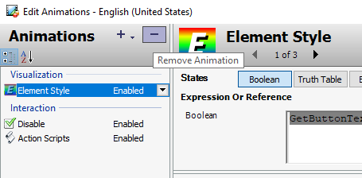
Edit Animations dialog for NavigationButton2, showing the Animations list with Element Style (selected under Visualization), Disable, and Action Scripts (both under Interaction, marked Enabled). The right panel shows Element Style configuration (page 1 of 3) with a Boolean expression reference 'GetButtonTe...' (truncated GetButtonText) that controls the element style state.
appears. 40. Click Yes to confirm the removal of the animation. 41. Remove the Disable animation. In Animations, only the Action Scripts animation remains. 42. Click OK to close Edit Animations. 43. Save and close and check in the graphic. Add a Navigation Button for the Alarm Aggregation Overview Now, you will add an Alarm Aggregation Overview button to the navigation graphic. The button will open a popup window displaying the graphic you created in earlier steps. 44. On the Graphics tab, in the Training toolset, open SystemNavigation for editing. 45. On the Toolbox tab, search for button2, and then drag NavigationButton2 to the right of the Line 2 button on the canvas. 46. Change the text on the button to Alarm Overview.
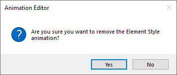
Animation Editor confirmation dialog asking 'Are you sure you want to remove the Element Style animation?' with Yes and No buttons. This appears after clicking the Remove Animation button in the Edit Animations dialog for the NavigationButton2 symbol.
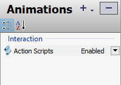
Edit Animations dialog for NavigationButton2 after removing the Element Style animation, showing only Action Scripts remaining under the Interaction category (marked Enabled). The Disable animation has also been removed, leaving only Action Scripts as the sole animation configuration.
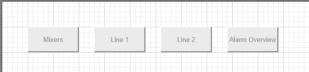
AVEVA InTouch WindowMaker canvas showing the SystemNavigation graphic with four navigation buttons arranged horizontally: Mixers, Line 1, Line 2, and Alarm Overview. The Alarm Overview button is the newly added NavigationButton2 placed to the right of the Line 2 button.
47. Right-click the Alarm Overview button and select Custom Properties. 48. For GraphicName, in Default Value, enter AlarmAggregationOverview. Leaving the WindowName custom property blank will make the graphic appear in a popup window. 49. Click OK to close Edit Custom Properties. Enhance the Navigation Buttons Now, you will enhance two of the SystemNavigation buttons by adding the alarm severity indicators. 50. From Instances, embed Line1\AlarmSeverityLabels and place it at the top and center of the Line 1 button. 51. Adjust the size of the graphic to fit the width of the button. 52. From Instances, embed Line2\AlarmSeverityLabels and place it at the top and center of the Line2 button. 53. Adjust the size of the graphic to fit the width of the button. 54. Save and close and check in the graphic.
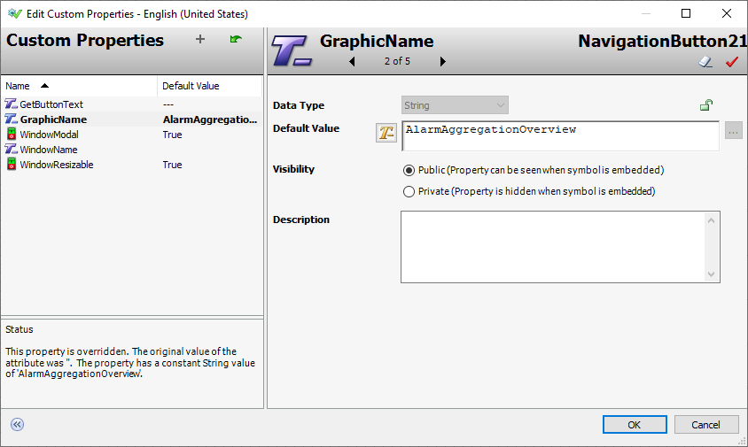
Edit Custom Properties dialog for NavigationButton21 (renamed from NavigationButton2), showing GraphicName property (page 2 of 5) set to the string value 'AlarmAggregationOverview'. The status confirms the property is overridden with a constant String value. WindowModal and WindowResizable are both set to True, and WindowName is left blank to make the graphic appear in a popup window.
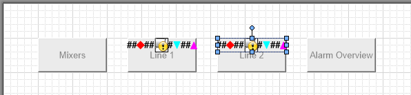
AVEVA InTouch WindowMaker canvas showing the SystemNavigation graphic with enhanced navigation buttons. Line 1 button now displays alarm severity indicator labels (## diamond and square counts) at the top. Line 2 button is currently selected (blue selection handles visible) with similar alarm severity indicators being positioned. Mixers and Alarm Overview buttons are on either side.
Finally, you will test the results in runtime. 55. In WindowMaker, click Runtime. 56. In the Navigation window, on the Line 1 and Line 2 buttons, notice that alarm counts for each severity appear. 57. Click the Alarm Overview button to open the AlarmAggregationOverview popup window.
AVEVA InTouch WindowViewer runtime view showing the navigation bar with five tiles: Mixers (no alarms), Line 1 (12 Critical red diamond, 8 Medium yellow square, 5 Low cyan triangle), Line 2 (same alarm counts), and Alarm Overview (navigation tile). This demonstrates the alarm severity counts displayed on the navigation buttons at runtime.
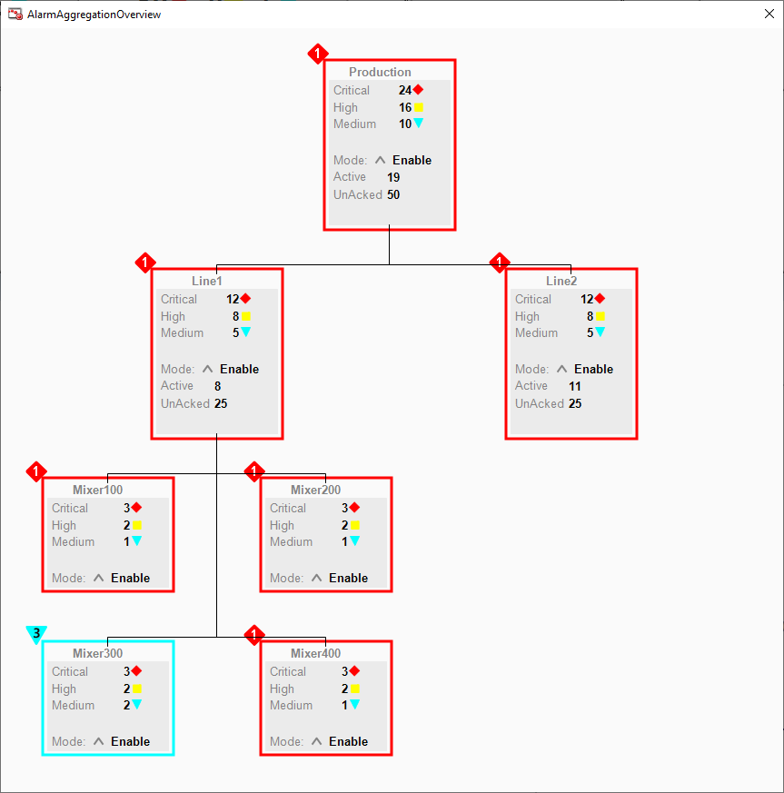
AVEVA InTouch runtime popup window titled 'AlarmAggregationOverview' showing the complete hierarchical alarm aggregation tree with Production at root, Line1 and Line2 as children, and Mixer100-400 under Line1. All nodes show alarm counts by severity (Critical/High/Medium), Mode: Enable, Active and UnAcked counts. The data rolls up from children to parents (e.g., Line1 Critical 12 + Line2 Critical 12 = Production Critical 24).
58. Behind the popup window, attempt to click the Mixers button in the Navigation window. There is no response to this action because the window is modal and must be closed before you can do anything else. 59. In AlarmAggregationOverview, in the Production alarm panel, to the right of the Mode label, click the up-arrow Command Panel button. A command panel with a drop-down appears in the Production alarm panel. 60. Click the down-arrow and select Disable. The Apply button appears. 61. Click Apply.
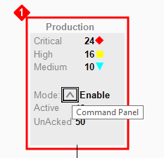
Zoomed view of the Production alarm aggregation panel in the AlarmAggregationOverview popup, with a red annotation marker '1'. The panel shows Critical: 24 (red diamond), High: 16 (yellow square), Medium: 10 (cyan triangle), Mode: Enable, Active: 19, UnAcked: 50. A 'Command Panel' tooltip is visible indicating the dropdown control area for changing the mode.
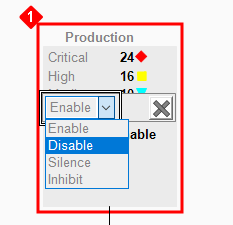
Production alarm aggregation panel with the Mode dropdown menu expanded, showing four options: Enable, Disable (currently highlighted/selected in blue), Silence, and Inhibit. The panel shows alarm counts and the expanded control menu for changing the operational mode of the Production alarm group.
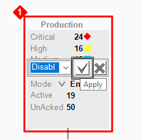
Production alarm aggregation panel after selecting Disable from the dropdown, showing the dropdown now displays 'Disabl' (truncated Disable) with a checkmark Apply button and X cancel button visible. The Mode field below still shows 'En' (Enabled) waiting for the Apply action to take effect. Active: 19 and UnAcked: 50 are displayed.
62. Observe all alarm panels in the popup window indicate Disable. Disabling alarms for the Production area also disables alarms for all child objects.
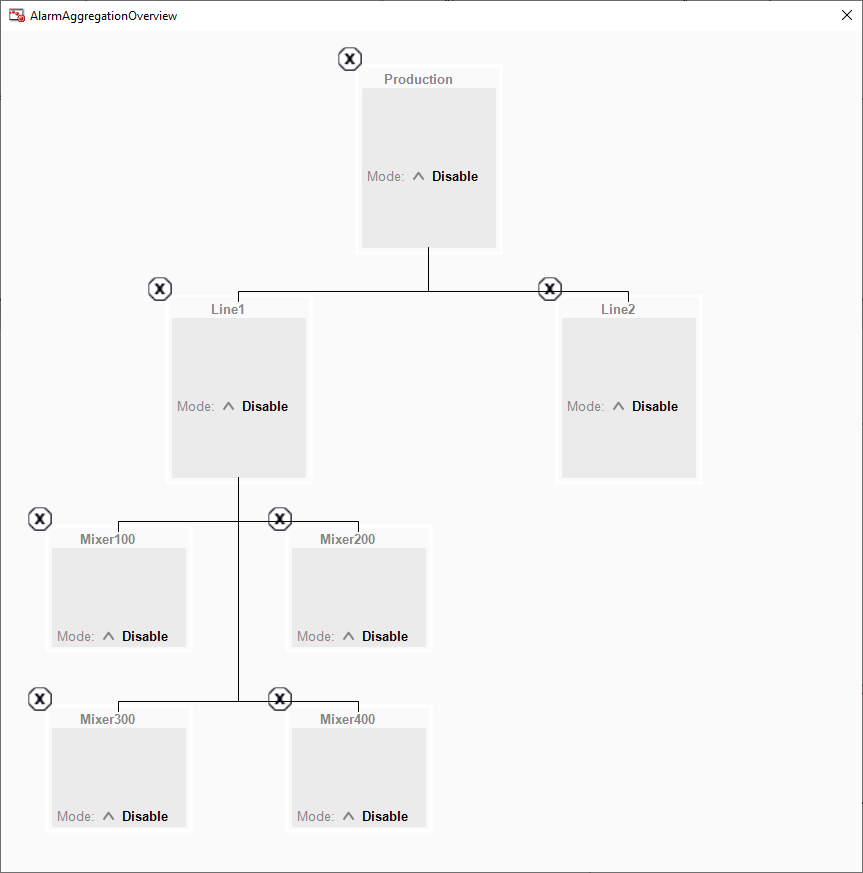
AlarmAggregationOverview popup window showing all alarm aggregation nodes (Production, Line1, Line2, Mixer100-400) with Mode: Disable displayed on every node. Each node shows a gray box with an 'X' status circle and 'Mode: ▲ Disable' text, demonstrating that disabling alarms for the Production area also disables alarms for all child objects.
63. In the Production alarm panel, to the right of the Mode label, click the up-arrow. 64. Click the down-arrow and select Enable. 65. Click Apply. 66. Observe all alarm panels in the popup window are enabled. 67. Close the AlarmAggregationOverview window. 68. Click Development! to return to WindowMaker.
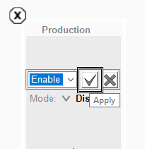
Production alarm aggregation panel in 'Enable' mode after re-enabling, showing the checkmark (Apply) button highlighted. The Mode dropdown shows 'Enable' with the commit checkmark button emphasized, demonstrating the step to re-enable the Production alarm group.
[Optional Steps] Add Additional Mixer Alarm Panels The following optional steps complete the AlarmAggregationOverview graphic by adding additional mixer alarm panels to the Line2 area. 69. In the IDE, on the Graphics tab, in the Training toolset, double-click AlarmAggregationOverview to open it for editing. 70. On the canvas, select all four mixer alarm panels and duplicate them. 71. Place the duplicates in the empty area below the Line2 alarm panel as shown below. Note: If necessary, click the canvas and resize it so all panels fit on the canvas as shown.
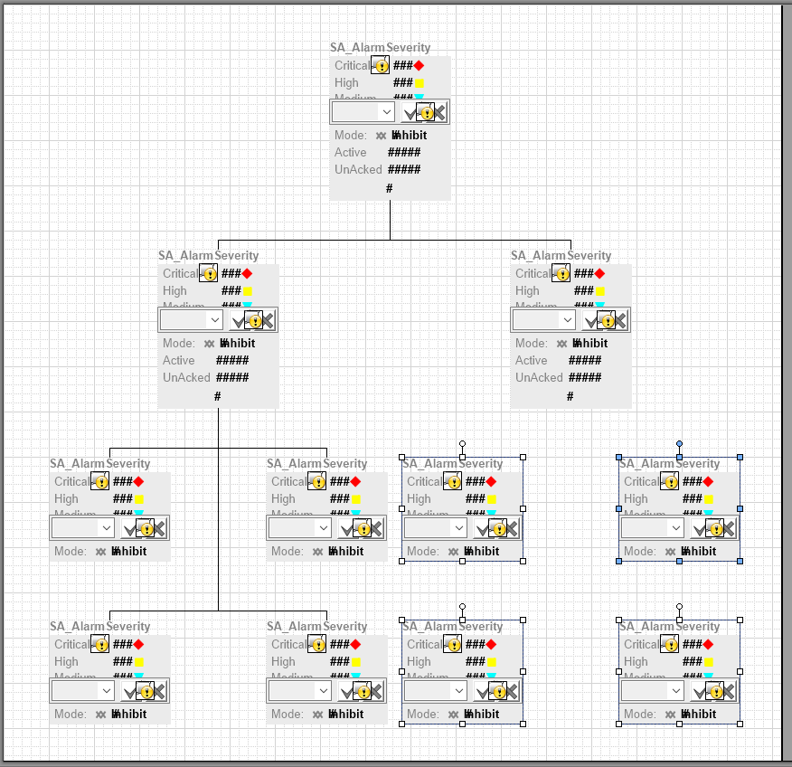
AVEVA InTouch WindowMaker canvas showing the completed alarm aggregation layout with all nodes in a 4-tier hierarchy. The design includes SA_AlarmSeverity panels connected by lines, with some nodes showing blue selection handles for the duplicate mixer panels being positioned in the empty area below Line2.
72. Change the instance name for each duplicate by right-clicking and selecting Industrial Graphic | Select Alternate Instance as follows: 73. In Tools, double-click Connector and draw connectors between the Line2 alarm panel and the four duplicate mixer alarm panels as shown below. 74. Save and close and check in the graphic. Current Alternate Instance Mixer100 Mixer500 Mixer200 Mixer600 Mixer300 Mixer700 Mixer400 Mixer800
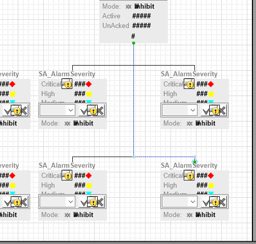
AVEVA InTouch WindowMaker canvas showing the expanded alarm aggregation hierarchy with 8 mixer panels (Mixer100-Mixer800) arranged under Line1 and Line2. The Tools palette is visible showing available drawing and connector tools. Connector lines link the Line2 alarm panel to the four duplicate mixer alarm panels (Mixer500-800).
75. Test in runtime. 76. When you are finished testing, click Development! to return to WindowMaker.
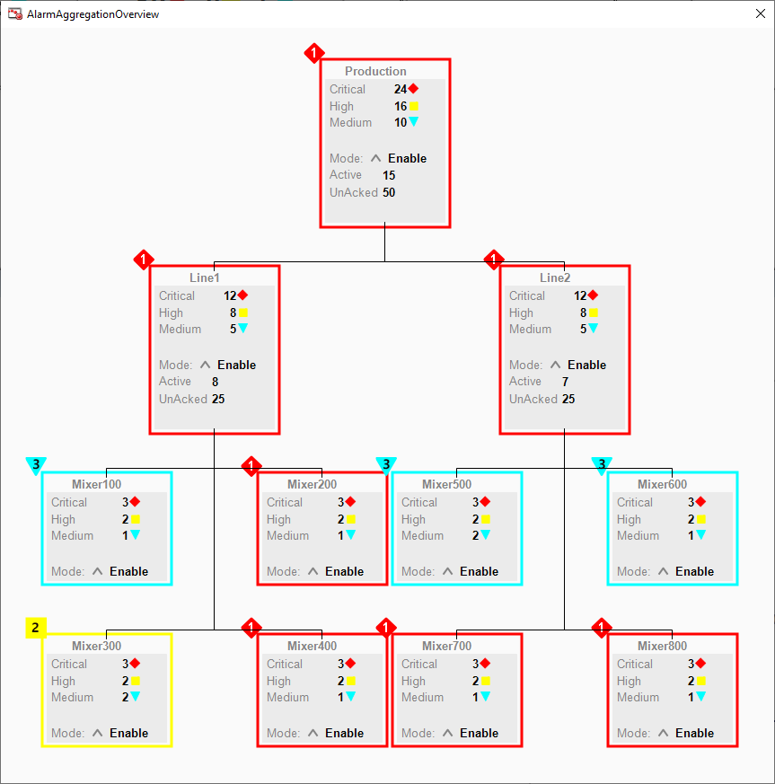
AVEVA InTouch runtime view showing the complete AlarmAggregationOverview with all 8 mixers (Mixer100-Mixer800) under their respective lines, with alarm severity counts by priority. The Production node shows rolled-up totals (Critical: 24, High: 16, Medium: 10), Line1 and Line2 show intermediate counts, and each mixer shows individual alarm counts. Color-coded borders indicate highest priority in each branch.
events. The Alarm Client control replaces the Alarm Viewer control and Alarm DB View control in the InTouch HMI and extends alarm visualization to the graphics environment. The Alarm Client control is delivered as part of the Graphic Editor and can be used in symbols to show current and historical alarms and events in a grid. In the Graphic Editor, Tools pane, select the Alarm Client control and place it directly onto the canvas. Customize the Alarm Client control by adding further graphics, interactions, and scripts. Deploy a Managed InTouch application containing Alarm Client controls to a remote node to visualize and interact with alarms at runtime with InTouch WindowViewer. This control has properties, methods, and events that can be modified, while an application is running. Once the control format has been designed, a user can make the following adjustments to manipulate the data they are viewing in runtime, such as: Refreshing the Alarm Client control grid to show the most current alarms Using the status bar to view various information about the alarm records Acknowledging, hiding, filtering, or sorting alarms Freezing the Alarm Client control grid Switching between client modes Switching between languages This section explains how to use the Alarm Client control in your InTouch for System Platform application to visualize live alarms.
modes, which can be grouped depending on their data source. Alarm Client Control supports the InTouch Database (WWALMDB), the ArchestrA Database (A2ALMDB), and the Historian History Blocks. The Alarm Client Control allows users to view and acknowledge all locally and remotely generated alarms. Embedding the Alarm Client Control To embed the Alarm Client control, open the Graphic Editor. In the Tools pane, select the Alarm Client tool. Then click the canvas to place the object. You can resize the control and double-click it to access the configuration options. Configuration Options Alarm Mode Set the Alarm Client Control to show either: Current alarms Recent alarms and events Use the ClientMode integer property in scripting to switch the Alarm Client control to show current alarms or recent alarms and events at runtime. Comments can be configured for alarms that are
AVEVA InTouch Edit Animations dialog for the AlarmClient control, showing the Alarm Mode configuration (page 1 of 8). The left panel lists all required configuration categories: Alarm Mode, Colors, Column Details, Queries and Filters, Time Settings, Run-Time Behavior, Data Binding, and Event. The right panel shows Client Mode set to 'Current Alarms' and Alarm Query set to '\\S01ENG\Galaxy\Production'.
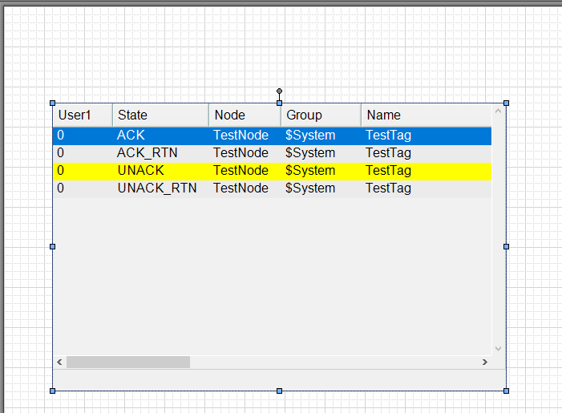
AVEVA InTools Alarm Client control configuration showing a data table widget with columns User1, State, Node, Group, and Name. The table displays four rows demonstrating different alarm states: ACK (blue highlight), ACK_RTN, UNACK (yellow highlight), and UNACK_RTN. The widget is selected in the design canvas with blue selection handles visible.
runtime. Use the AckComment.UseDefault Boolean property and AckComment.DefaultValue String property in scripting to create a default acknowledgment comment at runtime. In the Client Mode drop-down list, select which alarms to display: Current Alarms Recent Alarms and Events Historical Alarms Historical Events Historical Alarms and Events The alarm query is configured in the Alarm Query field. To create a new line in the Alarm Query field, press Ctrl + Enter. For more information on the valid syntax, see Alarm Queries in the Alarm Control Guide. If a default acknowledgment comment is needed, check the Use Default Ack Comment check box and enter a comment in the text box.
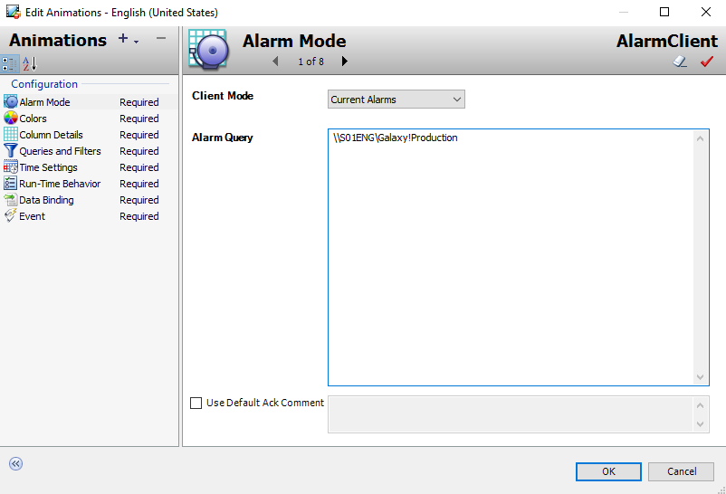
AVEVA InTouch Edit Animations dialog for AlarmClient1 showing the Colors configuration (page 2 of 8). The left panel shows color settings for Event, Alarm RTN, Heading, Shelve, Grid, and Window with text/background color selectors. The right panel shows the priority-based color mapping table with Ack/Unack states across four priority ranges (1-249, 250-499, 500-749, 750-999) with distinct background colors. Flash UnackAlarms checkbox is available at the top.
alarms. The Alarm Client control can be configured with priority breakpoints to show alarm records within the resulting priority ranges in different colors. The control background color, the grid color, and the heading colors can also be customized. Column Details Column headers can be renamed, resized, and reordered in the Alarm Client control. All changes made in the Column Details list are shown in the grid preview. Use the grid preview to resize columns or change their order with the pointer.
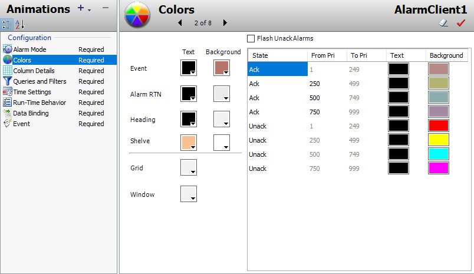
AVEVA InTouch Edit Animations dialog for AlarmClient1 showing the Column Details configuration (page 3 of 8). The left table lists display columns (User1, State, Node, Group, Name, AlarmComment, Type, TimeLCT, Limit, CurrentValue) with enable checkboxes, display names, widths, and original names. The right panel shows sorting criteria with First Sort set to TimeLCT (Last Change Time) in Ascending order. A preview bar shows column header order.
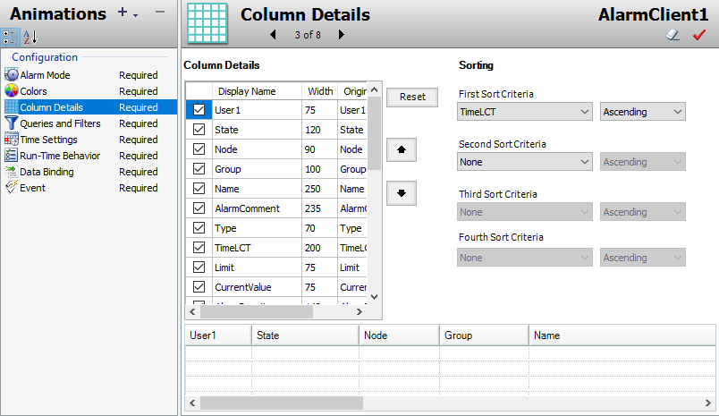
AVEVA InTouch Edit Animations dialog for AlarmClient showing the Queries and Filters configuration (page 4 of 8). The Queries section shows a Default query with the filter expression '(Node = \'S01ENG\' AND Provider = \'Galaxy\' AND Group = \'Production\')' targeting production alarms from the S01ENG node. The Filters section below is empty with no additional filters configured.
Filters. A query filter is a collection of filter criteria in a logical construct. For example, alarms can be filtered by defining a query filter that only shows alarms with priorities larger than 500 and smaller than 750. Filter queries can be reused from historical alarms for current alarms, and vice versa. Filter queries can also be reused and defined at design-time for runtime, and vice versa. Note: Queries and Filters for current alarms and recent alarms and events require at least a Provider and a Group as filter criteria. These must use the equals sign. Ensure the TimeSelector.StartDate and TimeSelector.EndDate properties do not limit the query when using TimeLCT, TimeOAT, or TimeLCTOAT as filter criteria for historical alarm modes, otherwise the Alarm Client control may not return all alarm and event records. Set the TimeSelector.StartDate property earlier than any time filtering requirement and the TimeSelector.EndDate later than any time filtering requirement.
AVEVA InTouch Edit Animations dialog for AlarmClient1 showing the Time Settings configuration (page 5 of 8). The panel includes Time Zone set to 'Client Time Zone (UTC-08:00) Pacific Time (US & Canada)', a Use .NET Time Format checkbox (checked), format string 'M/d/yyyy h:mm:ss tt', date/time preview lists showing various format examples, and a .NET format token reference guide (MM, MMM, MMMM, dd, yyyy, yy, HH, hh, mm, ss, fff, tt).
records. By default, the time zone is set to the client computer’s current time zone at design-time. Use the TimeZone.TimeZone, Time.Type, and Time.Format properties in scripting to set the time zone, time type, and time format at runtime. Set the time format of the alarm and event records. Select between the following: Time Format: Same as the Alarm Client control .NET Time Format: Defined by Microsoft .NET Framework time format conventions
AVEVA InTouch Edit Animations dialog for AlarmClient1 showing the Run-Time Behavior configuration (page 6 of 8). Left panel has checkboxes for Show Heading, Show Grid, Show Status Bar, Query on Startup (all checked), Auto Scroll to New Alarms (unchecked), Hide Errors and Warnings (unchecked), Allow Column Resizing (checked), and others. Right panel shows the Show Context Menu options with all batch alarm operations enabled: Ack Selected/Others, Shelve/Unshelve Selected/Others, Hide Selected/Others, Ack All/Visible/Selected Groups/Tags/Priorities, Sort, Freeze, Statistics, Requery, and Reset.
Run-Time Behavior The behavior and appearance of the Alarm Client control can be configured at runtime, for example: Showing and Hiding parts of the Alarm Client control Specifying if the Alarm Client control queries the alarm database, when it starts up Scrolling to new alarms Hiding warnings, errors, and messages Restricting operator access to parts of the Alarm Client control Specifying Alarm Client control freeze behavior Customizing the no records message Customizing the runtime shortcut menu
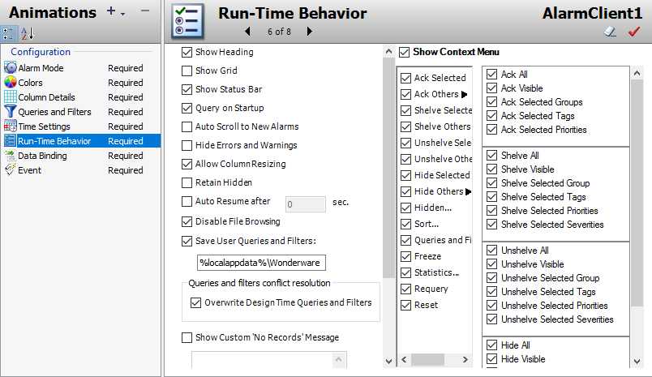
AVEVA InTouch Edit Animations dialog for AlarmClient1 showing the Data Binding configuration (page 7 of 8). The table lists AlarmProvider properties with their .NET data types (ApartmentState, CultureInfo, CalendarAlgorithm, Boolean, DateTime, Int32, Int64, DayOfWeek, DateTimeKind), empty Value and Reference fields for linking to external data, and green direction arrows indicating read-only data flow from the alarm provider to the control. A 'Show all properties' checkbox is available at the bottom.
references. This enables attributes and element references source and consume data for the client control properties. The Data Binding table contains the following information: Name: Name of the client control property Type: The .NET data type of the property Value: The default value of the client control property Direction: Indicates if the property is read/write or just read-only
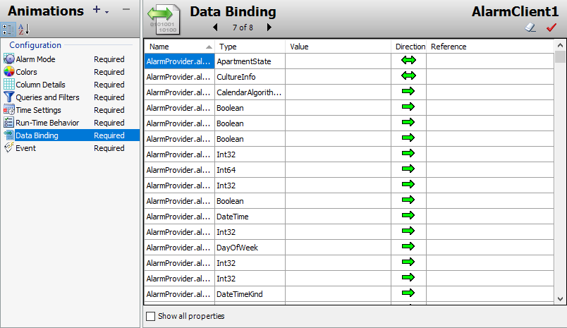
AVEVA InTouch Edit Animations dialog for AlarmClient1 showing the Event configuration (page 8 of 8), the final step in the Alarm Client control setup. This tab configures event handling and callback properties for the alarm client, completing the 8-step configuration workflow for the Alarm Client control used in alarm aggregation visualization.
Knowledge Check
1. What are the key concepts covered in this lesson about Lab 13 – Alarm Aggregation?
Click to reveal answer
Review the sections above for the main topics, step-by-step procedures, and important configuration details.
2. How does this topic relate to AVEVA System Platform?
Click to reveal answer
This is part of the InTouch HMI layer, which integrates with Application Server's Galaxy for a complete visualization solution.
Module 5 — Alarms and Events Visualization. AVEVA InTouch for System Platform 2023 Training.


![AVEVA InTouch Edit Animations dialog for AlarmClient1 showing the Run-Time Behavior configuration (page 6 of 8). Left panel has checkboxes for Show Heading, Show Grid, Show Status Bar, Query on Startup (all checked), Auto Scroll to New Alarms (unchecked), Hide Errors and Warnings (unchecked), Allow Column Resizing (checked), and others. Right panel shows the Show Context Menu options with all batch alarm operations enabled: Ack Selected/Others, Shelve/Unshelve Selected/Others, Hide Selected/Others, Ack All/Visible/Selected Groups/Tags/Priorities, Sort, Freeze, Statistics, Requery, and Reset.](../images/page_0338.png)